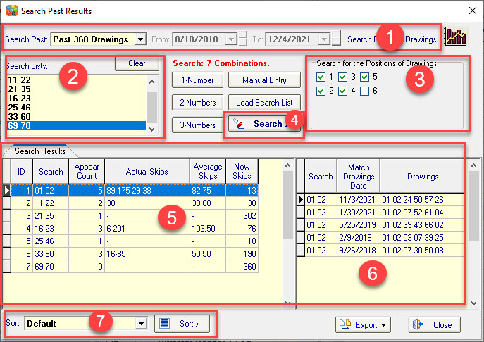

Search Past Drawings Introduction |
Click
Toolbar->Search to open the Search Past Drawings.
The standard hot and cold number analysis function can only analyze the hot and cold of a single number. This function can search and count the number of times single number, combination of 2 numbers, or combination of 3 numbers has appeared in the history drawings of the lottery.
After the search is completed, the program will count the number of appears and skips of the number combinations. And a detailed list of which drawings show these number combinations.
Based on the statistics we can analyze which number combinations are hot and which are cold.
The search can be completed in just a few simple steps, as follows
① Select search drawings range.
Support for choices Past 50 Drawings, Past 120 Drawings, Past 260 Drawings, Past 100 Drawings, All Available History Drawings and Custom Date Range.
②
Enter set the numbers to search for.
Supports automatic search combination generation ('1-Nmuber' generates all combinations of one number, '2-Nmuber' generates all combinations of two numbers, '3-Nmuber' generates all combinations of three numbers), manual entry and Load Search List from Txt file, please see the button on the right side of the search list box for details..
③ The option to search by positions.
Set which numbers in which positions will be searched, by default all positions will be searched (if the lottery has Bonus numbers by default they will not be searched. If only Bonus numbers are searched, do not select other positions).
④ Click the 'Search' button to start your search.
⑤ After the search is completed, the search results are displayed here.
⑥ Show details of current search results.
About Actual Skips, Average Skips and Now Skips. Actual Skips is a assist function that can help us to count the missing patterns of each value in the current search numbers(Actual Skips). How many times it appears on average (Average Skips) and How many drawings have not occurred (Now Skips).
⑦ Sort the search results after the search is complete. Appear Count and Now Skips can be sorted.

Home
Page: http://www.samlotto.com
Support:support@samlotto.com
Copyright: © SamLotto Lottery Software
Team All rights reserved.